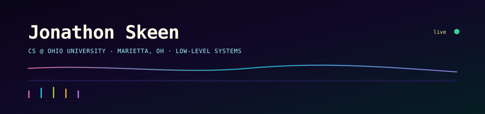

|
Now Computer Science · Ohio University · Marietta, OH Turning curiosity about memory, concurrency, and persistence into repos you can clone and run. |
Trajectory TypeScript · C# · Python · Go · embedded · databases Exploring the seam where hardware constraints meet software ergonomics — plus full-stack surfaces and AI-side experiments across personal, coursework, and Skevia LLC repos. |
Signal Latest fixation Skevia OS — a unified OS concept blending ideas from Qubes, macOS, and Ubuntu into something coherent enough to prototype. Shipping through Skevia LLC; public surface is Skevia-Website, with the rest of the active org stack folded under Private sandboxes below. |
Toolbox — languages, platforms, and the usual suspects
Projects worth a stop
| Project | Notes |
|---|---|
| bartender-boys | Ohio University CS project (archived): AI bartender automation — TypeScript. |
| Skevia-Website | Skevia LLC site shell and styling — CSS. |
| Blackhole | Interactive playground for gravity wells and orbital mechanics — JavaScript. |
| Brainrot Doomscroller | Generative art riff on viral culture — creative coding with teeth — JavaScript. |
| BidBuilder | Construction bidding for companies and individuals — JavaScript. |
| Memorymanager | Simulated dynamic memory allocation — C++. |
More public repos — Jskeen5822
| Project | Notes |
|---|---|
| Personal-Website | Personal site — CSS. |
| SQL-and-Aggregate-Databases | Fetch repo data into SQL and compute aggregates — Python. |
| Hackers-Gauntlet | C++ exercise set. |
| Tornado | JavaScript project. |
| REST-API-Assignment | Python REST API coursework. |
| ML-project | ML automation experiments — Python. |
| Currencyconverter | Convert amounts between currencies. |
Private sandboxes — not on the profile chart, still real
Jskeen5822: Workspace (C#), Experiments (Python), Project-Conrad (Go, MIT).
SKEVIALLC: Vocari (C#), Luma (TypeScript), Skevia-App (HTML), Zephra (Python), Veks-AI (Python), Skevia-Studios (JavaScript), Perea (C), JustOne (TypeScript).
